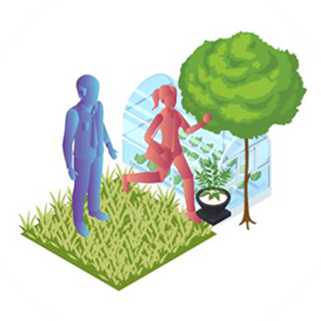

I'm a tooltip!

I'm another tooltip!

How might the Laan Van NOI redevelopment plan foster a thriving local community?
The Laan Van NOI area, one of three key gateways into The Hague's Central Innovation District (CID), is soon to be renovated. The CID is the economic heart of The Hague and the region and holds enormous potential. The area already provides employment for nearly 80,000 people and has 30,000 students. 45,000 people live in the area in 23,000 homes.
This plan aims to raze the current structure to overhaul its current mix-use building and parking infrastructure into a dense but car-free area surrounding the current train station. According to the current Structuurvisie document, "It will be an area where the boundaries between recreation, living and working are blurred. Where compaction and greening go together."
However, the sense isolation and its impact on mental health that the Covid-19 pandemic has exacerbated made the city realize that its vision did not sufficiently address issues. The municipality of The Hague therefore asked ‘Kennis Maken Den Haag’ to advise them on redevelopment of the Central Innovation District to better integrate strategies to stem loneliness, provide opportunities for social cohesion and the importance of green areas.
REDUCING LONELINESS
The connection between the social issue of loneliness and the spatial task will not be automatically laid. But organizing meeting in public space is important in combating social loneliness.
ENCOURAGING SOCIAL COHESION
Social cohesion represents the degree of connectedness and solidarity within groups and communities. The goal in area development should not be a close-knit community, but the encouraging light interactions: short, fleeting encounters, brief conversations through which people recognize each other, become more familiar with each other.
MAKING NEIGHBORHOODS GREEN AND HEALTHY
Access to green spaces in the city has a direct impact on residents’ health. How can greenery in the city be made available regardless of the socio-economic activity of the area?
Collaborative Troubleshooting
The five day workshop challenged students to unpack the Structuurvisie for the Laan Van NOI area and try to imagine who may be overlooked by the current vision. This approach heavily drew from the works of Sara Hendren and Rosemarie Garland-Thomson on the concept of states of misfit and action settings. The students went through several exercises of research, observation, and digital prototyping to arrive at a final set of narratives.
The whole experience was kicked off with a visit to the Laan Van NOI followed by several facilitated exercises held remotely using this Miro board.